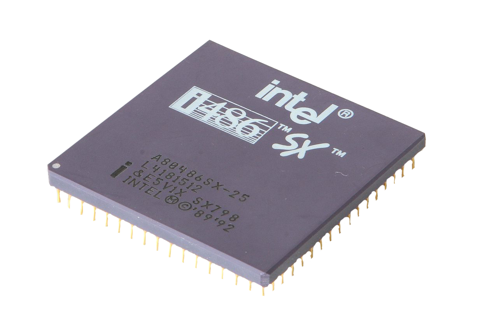

Floppy Disc

Floppy
FACTS
Grösse: 9cm
Speicherkapazität: 1,44 MB
Format: 3,5 Zoll
Lebensdauer: 5 bis 30 Jahre
Nachfolger: CD, Iomega Zip, USB-Stick
Vorstellung: im Jahr 1969
Der Entwickler: Alan Shugart
Compaq Laptop

Compaq Portable
FACTS
Gewicht: 13kg
Betriebsystem: MS DOS 1.1
CPU: Intel 8088
Geschwindigkeit: 4,77 Mhz
Built in Media: 2x 5.25" floppies von 160KB, 320KB and 30KB
Vorstellung: im Jahr 1983, vor 39 Jahren
Der Hersteller: Compaq Computer Corporation
Sony Ericsson T630

Sony Ericsson T630
FACTS
Gewicht: 92g
Memory: 16MB internal, mit Memory Stick Micro M2 bis zu 2GB
Auflösung: 128 x 160 pixels
Verbindungen: Bluetooth 1.0b,GPRS class 8, infrarot port und firmeneigene usb
Vorstellung: im Jahr 2003
Der Hersteller: Sony Ercisson
ibm dos

IBM DOS
FACTS
Sprachen: Englisch, Deutsch, Dänisch, Finnisch, Französisch, Italienisch..
Betriebssystem Art:Denial Of Service
Verbindungen: WCDMA, GPRS, Bluetooth and USB 2.0
Entwicklungssprache: Assembly C
Vorstellung: im Jahr 1981
Der Hersteller:Microsoft IBM
Logitech Keyboard

Logitech Keyboard
FACTS
Wert: 1'000$
Vorteile: Gute Switches
Nachteile:Wird laut
Vorstellung: im Jahr 1985
Der Hersteller: IBM
iphone

iphone
FACTS
System-on-a-Chip: Samsung S5L8900
Betriebssystem: IphoneOS 1.0
Interner Speicher: 4, 8 oder 16 GB
Entwicklungssprache: Swift
Vorstellung: im Jahr 2007
Der Hersteller:Foxconn
vhs

vhs
FACTS
Abkürzung von: Video Home System
Preis der ersten VHS: 1'000$ - 1'400$
Vorteile: Günstig, Covers meist interessant, Nostalgie
Nachteile:nicht HD, Zurückspulen ist eher mühsam
Vorstellung: im Jahr 1976
Der Hersteller: JVC
office

office
FACTS
Programmiersprache: C++, C#
kompatible Betriebssysteme: Windows 98, 2000, Me, XP, Server 2003, Vista, Server 2008
System Anforderungen ⮯
CPU: Intel Pentium 75 MHz oder 166 MHz für PhotoDraw
Memory: 16MB (Windows 95, 98, Me) / 32M (NT 4.0 SP3, 2000, XP, Vista, Server 2008)
Der Hersteller:Microsoft
WinTV-PVR-500
WinTV-PVR-500
FACTS
Gründer: Kenneth Plotkin, Kenneth Aupperle
Gebrauch:Sendungen aufnehmen und abspielen,
Veröffentlichung im Jahr: 1982
Hersteller: Hauppauge
DC 2000 Cartridge Tape
DC 2000 Cartridge Tape
FACTS
Physische länge: 62.5m
Speicher: 40MB
Veröffentlichung: 1972
Der Hersteller: 3M
HDD

HDD
FACTS
Abkürzung: Hard Disk Drive
Erste HDD Speicherkapazität: 3.75MB
Erste HDD Grösse: so gross wie zwei Kühlschränke
Gebrauch: Speicherung
Erst Veröffentlichung: 1956
Entwickler: IBM
Windows 95
Windows 95
FACTS
Abstammung: Windows 1.0
Kernel: MS-DOS
System Anforderungen ⮯
CPU: 386DX
Arbeitsspeicher: 4MB RAM
Festplattenplatz: 50MB
Laufwerke: Diskettenlaufwerk
Veröffentlichung: 1995
Entwickler: Microsoft
Intel i486 SX
Intel i486 SX
FACTS
Taktfrequenzen: 16, 20, 25 oder 33MHz
Fertigungstechnik:CHMOS IV mit 1,0µm
Betriebsspannung: VCore 5V
Erst Veröffentlichung: September 1991
Entwickler: Intel